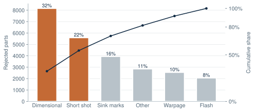
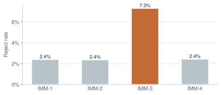
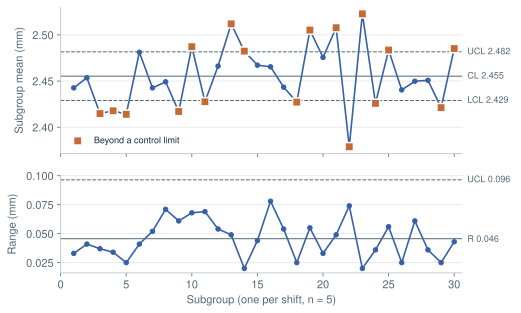
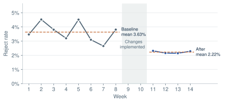
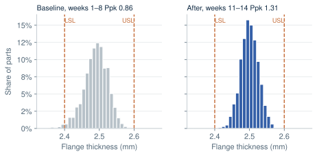

Cutting rejects on an injection-molded part by 39%.
Taking a molding defect problem from measurement to improvement and control: validate the gauge, find where the rejects come from, prove what drives the critical dimension, change the process, and make the gain stick.
Simulated dataset, real method. The data is a published, reproducible simulation of a four-machine molding cell. It is not from an employer. Every number on this page is computed by the analysis script, and you can download the raw data below.
3.63% → 2.22%Reject rate−38.8%, weeks 1–8 vs. 11–14
0.86 → 1.31Ppk, flange thicknessLong-term capability, all machines
≈60,900Rejects avoided per yearAt 4.32 M parts per year
≈$36.5kEstimated annual savingAt an assumed $0.60 per rejected part
- Product
- Polypropylene enclosure lid, 4 molding machines, 3 shifts
- Data
- 14 weeks · 864 production lots · 1.04 M parts
- Methods
- Gage R&R, Pareto, X̄-R chart, Cpk/Ppk, regression, 5 Whys, PFMEA, 8D
- Tools
- Python (pandas, statsmodels, matplotlib); methods match Minitab
Business problem
A molder makes a polypropylene enclosure lid on four injection-molding machines (IMM-1 to IMM-4) across three shifts. The lid’s flange thickness, 2.50 ± 0.10 mm, is critical to quality: it sets the snap-fit force and the seal. Rejects were running well above the plant goal, and end-of-line inspection was catching the defects without preventing them.
| Problem statement | In weeks 1–8, 25,133 of 691,632 lids (3.63%) were rejected. That costs about $94,000 a year at $0.60 per rejected part. |
|---|---|
| Goal | Reject rate below 2.5% within one quarter, without adding inspection. |
| CTQ | Flange thickness 2.50 ± 0.10 mm (LSL 2.40, USL 2.60) |
| In scope | Molding process on IMM-1 to IMM-4, resin drying, in-process checks |
| Out of scope | Mold redesign, resin supplier change |
| Team (scenario) | Process engineer, quality engineer, maintenance technician, shift leads |
Baseline
Eight weeks of production before any change, measured the same way as the improvement period.
| Measure | Baseline | Reading |
|---|---|---|
| Reject rate | 3.63% | Above the 2.5% goal |
| Ppk, flange thickness | 0.86 | Below the common 1.33 requirement |
| Cpk (within-subgroup) | 1.50 | Capable within a shift. The gap to Ppk points to drift between lots. |
| Worst machine | IMM-3 · 7.31% | The other three machines run at 2.4% |
| Top three defect types | 70% | Dimensional, short shot, sink marks |
Data used
Three tables, each one record per natural unit of the process. A lot is one machine running one shift on one day.
| File | Rows | Fields |
|---|---|---|
| molding_lots.csv | 864 | Date, week, phase, machine, shift, process settings (hold pressure, mold temperature, melt temperature, cooling time, resin moisture), parts produced, rejects by defect type |
| thickness_subgroups.csv | 864 | One subgroup of five flange-thickness readings per lot (mm) |
| gage_rr.csv | 90 | 10 parts × 3 appraisers × 3 trials on the thickness micrometer |
Before analysis I checked that every lot has a matching subgroup, defect counts never exceed parts produced, and settings fall within the machines’ physical ranges.
Method
- D
- DefineCharter, CTQ, scope and a cost of poor quality, so the goal is measurable.
- M
- MeasureGage R&R first, so the data can be trusted. Then baseline reject rate and capability.
- A
- AnalyzePareto, stratification by machine and shift, X̄-R chart, Cpk vs. Ppk, multiple regression, and 5 Whys.
- I
- ImproveFix the root cause, tighten the operating windows that matter, and confirm with four weeks of production data.
- C
- ControlControl plan, reaction plan, updated PFMEA, and 8D close-out.
Analysis
5.1 Can we trust the measurement?
Before reading anything into thickness data, I checked the micrometer with a crossed Gage R&R study using the ANOVA method.
| Source | % Study variation | Note |
|---|---|---|
| Total Gage R&R | 11.4% | Acceptable (AIAG: under 10% good, 10–30% conditional) |
| Repeatability | 10.3% | Most of the gauge error is the instrument and fixture |
| Reproducibility | 4.9% | Appraisers agree with each other |
| Part-to-part | 99.3% | The gauge sees real part differences |
| % Tolerance (GRR) | 15.4% | 6σGRR against the 0.20 mm tolerance |
| Distinct categories | 12 | Five or more is required |
Decision: the measurement system is fit for SPC and capability work. Repeatability, not the operators, is the larger share, so a better part fixture is a cheap later improvement.
5.2 Which defects matter most?

The top three defects share a mechanism: each is consistent with too little packing pressure during the hold phase. That gave the investigation a hypothesis to test, not just a ranking.
5.3 Where in the process?

By shift, the differences are small: A 3.78%, B 3.25%, C 3.87%. One clue was worth keeping, though: on C shift the mold temperature averaged 46.2 °C, against 45.2 °C on A and B.
5.4 Is the process stable?

This pattern is diagnostic. Variation within a subgroup is stable, so the machine is not inherently imprecise. The average moves from shift to shift, which is a special cause acting between lots. The mean also sits at 2.455 mm, 45 µm below nominal.
5.5 How capable is the process?
| Scope, baseline | Mean (mm) | Cp | Cpk | Ppk |
|---|---|---|---|---|
| All machines | 2.490 | 1.67 | 1.50 | 0.86 |
| IMM-3 only | 2.471 | 1.67 | 1.19 | 0.55 |
Cpk uses short-term, within-subgroup variation (R̄/d₂). Ppk uses everything. The large gap between them says the same thing as the control chart: the fix is setpoint stability, not new equipment.
5.6 What drives flange thickness?
A multiple regression of lot-average thickness on the logged process settings, using all 576 baseline lots:
| Term | Effect on thickness | p-value | Reading |
|---|---|---|---|
| Hold pressure | +0.0030 mm per bar | < 0.001 | Significant and large. 10 bar ≈ 0.03 mm, 30% of half the tolerance. |
| Mold temperature | −0.0076 mm per °C | < 0.001 | Significant. Explains the C-shift offset. |
| Melt temperature | +0.0005 mm per °C | < 0.001 | Significant but small: ±3 °C moves thickness by only ±0.0015 mm |
| Cooling time | −0.0001 mm per s | 0.94 | No detectable effect in the range run |
R² = 0.91, n = 576. This is observational data, so it shows association. Each change was confirmed with production data in the improve phase before it became the standard.
5.7 Root cause
- Why is IMM-3’s flange thin? Its lots average 592 bar of hold pressure against a 600 bar setpoint.
- Why is the pressure low and unstable? Its standard deviation is 12.0 bar, against 6.0 bar on the other machines, and the screw cushion drifts. Both point to a worn non-return (check) ring that lets melt slip back during hold.
- Why wasn’t it caught? Hold pressure and cushion were not on the control plan. Only the finished part was inspected.
- Why not? The PFMEA assumed end-of-line inspection would detect thin flanges. It detected them, but only after they were made.
Root cause: a worn check ring on IMM-3, plus no in-process monitoring of hold pressure. Contributing causes: C-shift mold temperature about 1 °C high, because the chiller was not verified at shift start, and resin moisture up to 0.07%, which correlates with short shots (r = 0.29).
Engineering recommendation
| Action | Addresses | Owner |
|---|---|---|
| Replace the IMM-3 check ring. Add a cushion alarm on all machines. | Root cause | Maintenance |
| Hold-pressure window 600 ± 8 bar with machine alarm | Biggest driver of thickness | Process engineering |
| Mold temperature 45 ± 1.5 °C, verified at every shift start | C-shift offset | Shift leads |
| Resin moisture ≤ 0.035% before release from the dryer | Short shots | Material handling |
| X̄-R chart on flange thickness for each machine | Early detection | Quality |
Deliberately not recommended: changing cooling time, which had no effect and would cost cycle time, and 100% inspection, which costs labor and fixes nothing.
Result & impact
The changes went in during weeks 9–10. Weeks 11–14 were then measured exactly like the baseline.


| Measure | Before | After |
|---|---|---|
| Reject rate | 3.63% | 2.22% |
| Ppk, all machines | 0.86 | 1.31 |
| Ppk, IMM-3 | 0.55 | 1.22 |
| Mean thickness | 2.490 mm | 2.500 mm |
| Hold-pressure SD across lots | 6.0 bar (IMM-3: 12.0) | 4.1 bar |
| Dimensional rejects per week | ≈1,020 | 2 |
Estimated impact: at 4.32 million lids a year, a 1.41-point drop in reject rate avoids about 60,900 rejected parts and $36,500 a year. This assumes $0.60 per rejected part for material and machine time, and excludes labor and customer-side costs.
What is left, and what’s next: Dimensional rejects are nearly gone. Short shots, sink marks and flash now lead the Pareto, and they are spread evenly across machines, which makes them common-cause. The next step is a designed experiment on the pack-and-hold profile, not more firefighting.
Control & sustainability
| Characteristic | Spec | Method | Sample / frequency | Reaction plan |
|---|---|---|---|---|
| Flange thickness (CTQ) | 2.50 ± 0.10 mm | Micrometer in fixture (GRR 11%), X̄-R chart | 5 parts per shift per machine | Out of control: stop, check hold pressure and cushion, contain back to the last good subgroup |
| Hold pressure | 600 ± 8 bar | Machine controller alarm | Every shot | Alarm: call maintenance, segregate the parts |
| Screw cushion | Setup sheet ± 1 mm | Controller trend | Every shot; weekly trend review | Upward trend: inspect check ring |
| Mold temperature | 45 ± 1.5 °C | Probe check, start-up checklist | Shift start | Adjust and verify before first-article release |
| Resin moisture | ≤ 0.035% | Moisture analyzer | Each dryer load | Re-dry; hold the material |
| Failure mode / cause | S | O | D | RPN |
|---|---|---|---|---|
| Thin flange (seal leak) / check-ring wear lowers hold pressure. Before: end-of-line check only. | 7 | 6 | 7 | 294 |
| Same, after: pressure alarm, cushion trend, SPC, ring on PM schedule | 7 | 2 | 3 | 42 |
| Short shot / wet resin. Before: visual check of dryer only. | 6 | 5 | 5 | 150 |
| Same, after: moisture test on each load | 6 | 2 | 3 | 36 |
8D summary
- D1
- TeamProcess, quality, maintenance and shift leads
- D2
- Problem3.63% rejects. IMM-3 thin flanges are the largest single contributor.
- D3
- ContainmentMeasure flange thickness on 100% of IMM-3 output until the repair is verified
- D4
- Root causeWorn check ring and unmonitored hold pressure (section 5.7)
- D5
- Corrective actionsRing replacement, pressure and temperature windows, moisture limit
- D6
- VerifyFour weeks: rejects 2.22%, Ppk 1.31, containment lifted
- D7
- Prevent recurrenceControl plan, PFMEA, check rings on all machines added to PM, SOP and start-up checklist updated
- D8
- CloseResults shared at the tier meeting; next project opened on short shots and sink marks
Tools used
Each calculation can be reproduced in Minitab: Stat › Quality Tools › Gage R&R (Crossed), Control Charts › X̄-R, Capability Analysis (Normal), and Regression.